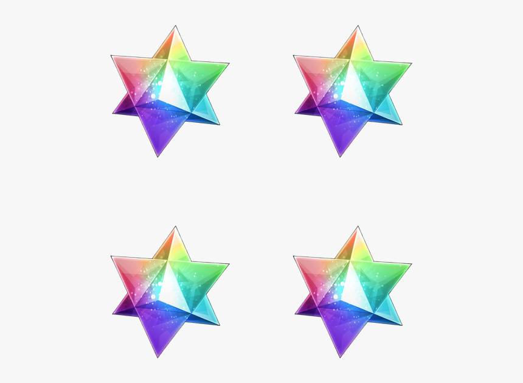
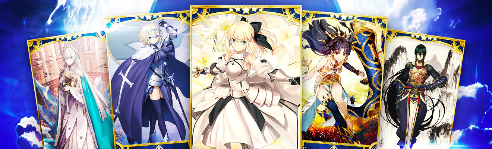
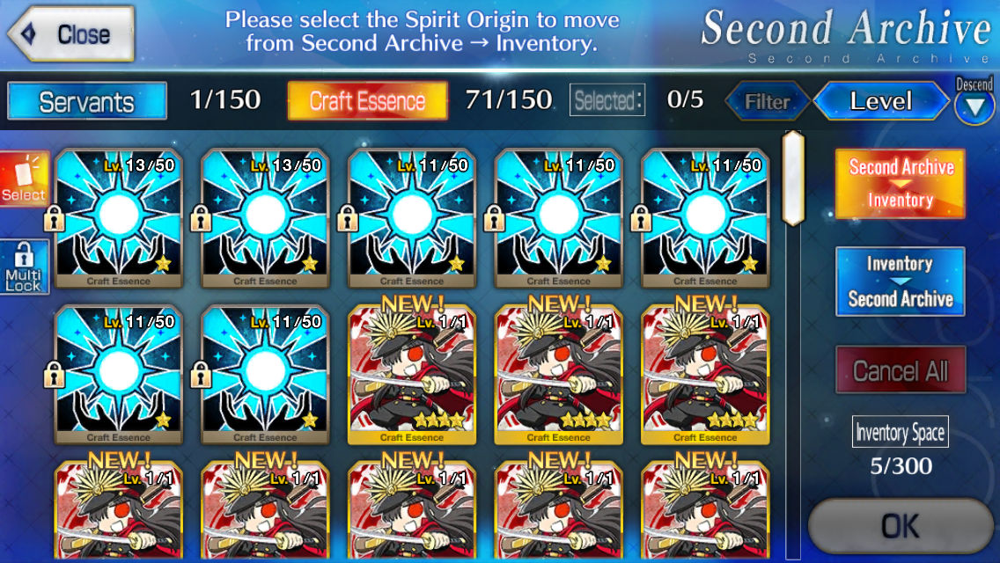
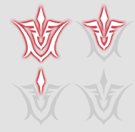

Los Saint Quartz (聖晶石 en japonés, abreviado SQ) son el principal recurso en Fate/Grand Order. Son utilizadas como principal moneda del juego.

Invocar Servants y Craft Essences.

3 SaintQuartz por invocaciones individuales y 30 Saint Quartz por invocaciones x10.
Recargar los AP cuando no son suficientes para entrar en una misión determinada.
Aumentar la capacidad de los inventarios para Servants o Craft Essences en 5 espacios por el coste de 1 Saint Quartz.

Revivir al equipo de Servants, con su vida al máximo y Noble Phantasm cargado al 100%.
